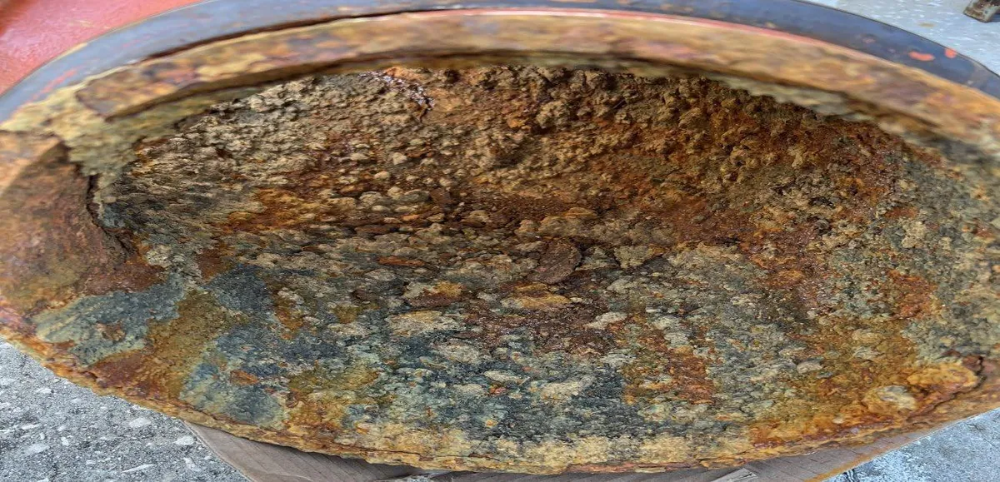
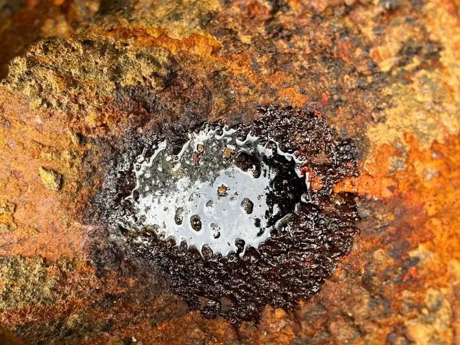
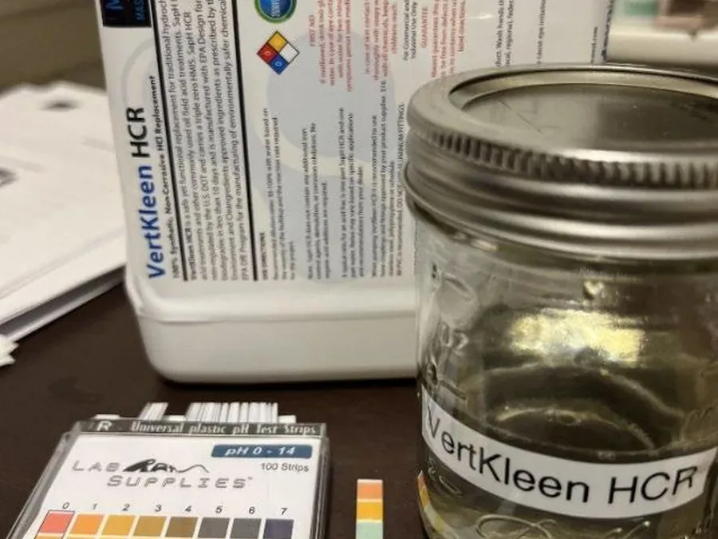
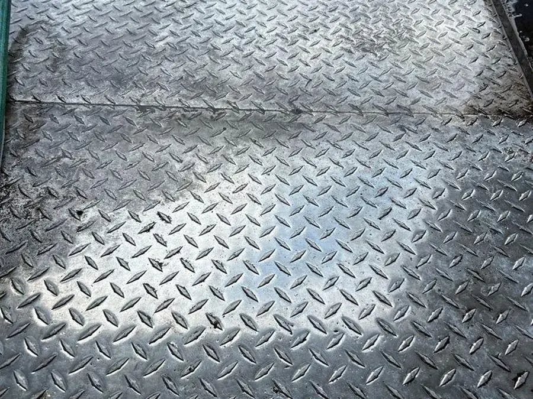

Public buyers need more than a nice label.
Documentation federal, state, local, and public-facility maintenance buyers expect.
Why VertKleen fits Military / Government.
MASEST keeps SAM.gov, CAGE 0B2Q3, and NAICS 424690 procurement files ready for federal, state, local, and public-facility buyers. VertKleen maps hazardous acids, caustics, and water-treatment functions across public assets while keeping HMIS 0-0-0 documentation, SDS, and exception notes on hand.
See the proof
What Military / Government buyers need documented first.
Public buyers need CAGE, NAICS, SDS, procurement files, and controlled documents before switching a chemistry standard.
Bundle: HCR, Descaler, CRHD, and AlumiBrite cover rust, scale, grease, and aluminum restoration with documented routing.
VertKleen products for Military / Government.
Replacement options for the legacy chemistry this work usually relies on first.
Field proof from Military / Government sites.
Documented work from the VertKleen field library.



Put the current chemical on the table.
Send the legacy product, surface, soil, volume, and buying deadline. MASEST routes the replacement, proof, sample, or partner path from there.